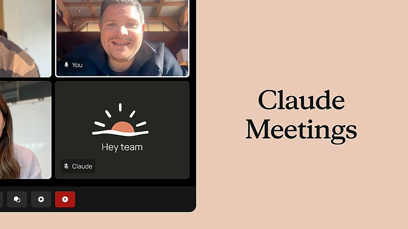
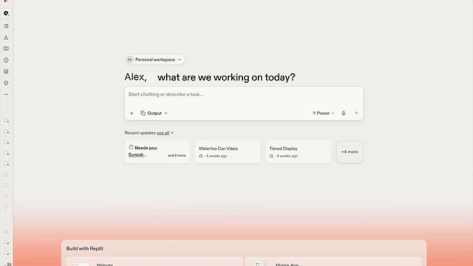
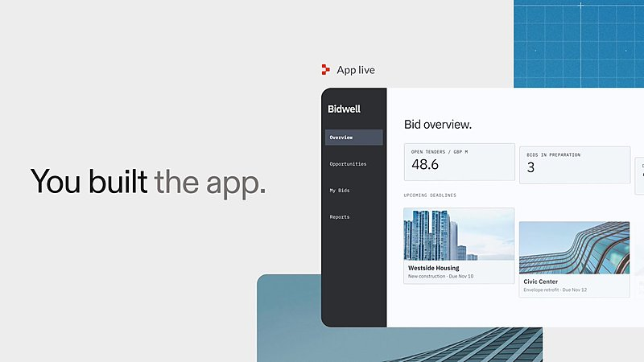

AI 日报 · 11月14日
快速模型与持久代理进入实际工作流
Google 推出 Gemini 4 Hydrogen 和智能眼镜；OpenAI 分享持久代理实践，Builder 讨论产品入口与执行边界。
快速模型
持久代理
智能眼镜
开源工具
6
Builder 动态
3
上榜仓库
3
官方原文
今日要点
Builder 动态
产品入口与代理工作流
Josh Woodward｜Gemini 进入眼镜视角
Google 产品负责人展示 Gemini 智能眼镜，并说明新品已开放预订；发货时间和支持设备以官方产品页为准。
Aaron Levie｜快速模型进入企业评测
Box CEO 称其在内部复杂工作评测中测试了 Gemini 4 Hydrogen，并观察到相对上一代快速模型的准确率提升；该数字属于 Box 自有评测。
Peter Steinberger｜持久代理的运行边界
他分享 OpenAI 团队关于持久代理运行方式的文章，重点涉及控制面、隔离、身份和审查。
Alex Albert｜给 Claude 补齐缺失上下文
Albert 认为，让 Claude 产出更好的工作成果，关键是找出它缺少哪些上下文；他以 Claude Meetings 为例。

Amjad Masad｜代理开始执行采购
Replit CEO 表示，用户现在可让 Replit Agent 为企业购买商品及广告；实际交易仍需按产品权限与结算流程核对。


Guillermo Rauch｜组件库面对代理时代
Rauch 提出，代理生成界面时，UI SDK 与组件基础设施需要更细粒度的能力；这是其产品观点。
GitHub Trending
代码审查与代理开发工具
11 月 14 日 GitHub Trending 页面快照；星标和 Fork 数由 GitHub API 核验。
今日思考
模型越快、入口越贴近日常，越需要清楚记录代理何时能行动、何时应暂停。
参考来源
Google Gemini 4 Hydrogen 官方发布
Google 智能眼镜官方发布
OpenAI 持久代理技术文章
GitHub Trending
Josh Woodward｜Gemini 进入眼镜视角
Aaron Levie｜快速模型进入企业评测
Peter Steinberger｜持久代理的运行边界
Alex Albert｜给 Claude 补齐缺失上下文
Amjad Masad｜代理开始执行采购
Guillermo Rauch｜组件库面对代理时代
alibaba/open-code-review
GoogleChrome/modern-web-guidance-src
openai/codex-security